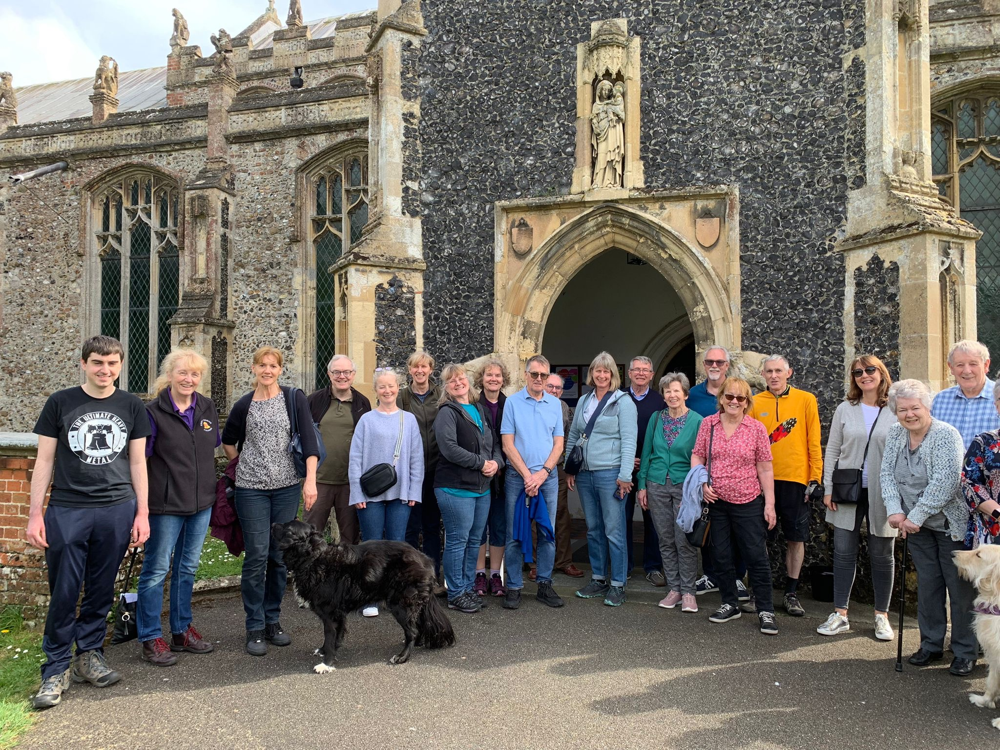
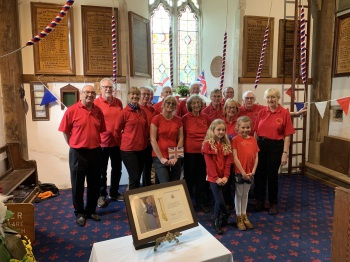
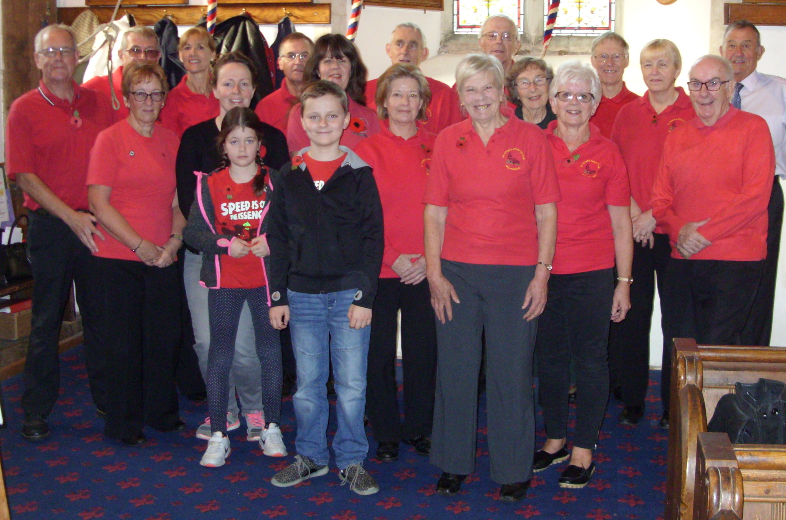
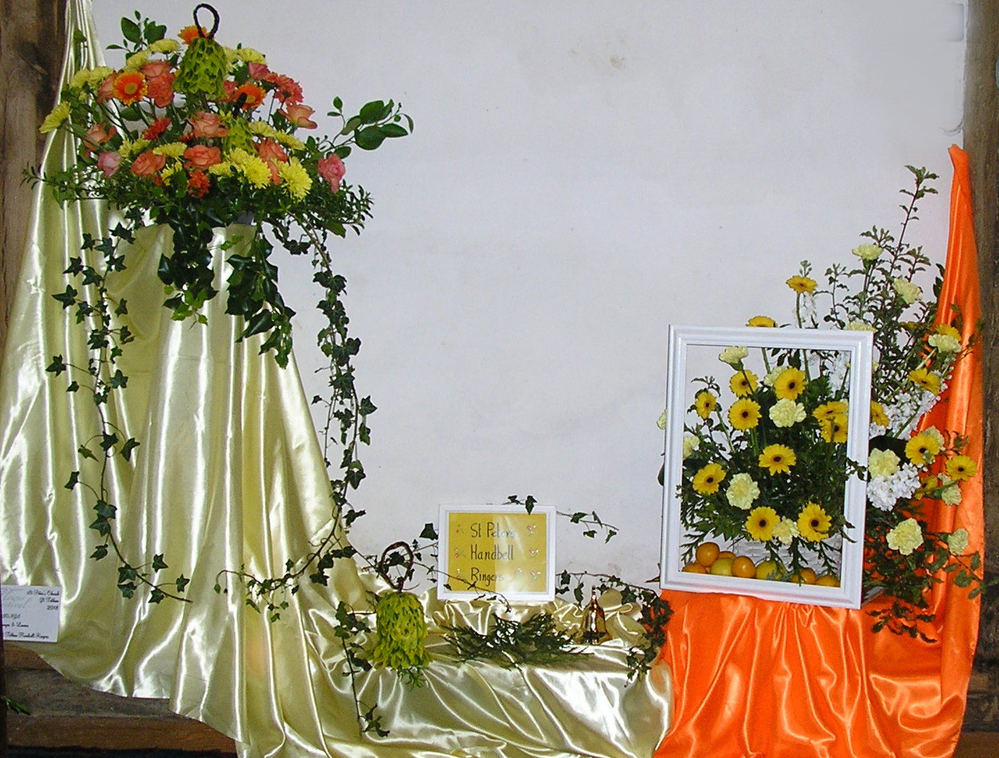

An article called "News from the Belfry" appears most months in the Great Totham Parish Magazine. The longer stories below are a record of what we've been ringing for, and who has come to ring with us.
April 2024
Tower outing to South Suffolk
On Saturday 13th April, eleven St Peter's ringers — together with friends from Inworth, Tollesbury, Broomfield and Galleywood — set off on a tower outing to South Suffolk. One intrepid member of the band elected to cycle the eighty-seven-mile round trip.

Tower outing, April 2024
The first tower Janice arranged for us was St Peter's, Henley. The church was open but unfortunately no-one turned up to show us the ropes, so we were unable to ring. Our second tower was St Mary's and St Peter's at Barham, about two miles away — a ground-floor ring of six. The bells had been augmented from four to six and restored in December 2020, having not been rung since 1947. The oldest restored bell, dating back to 1587, had a large chip; the rest were cracked and the supporting frame had woodworm.
Then to lunch at the Sorrel Horse Inn, Barham. Afterwards we burned off some calories with a steep climb up a stone spiral staircase to access the ringing chamber. The last stop of the day was All Saints, Sproughton — a ring of six, the eldest cast c.1550.
May 2023
Ringing for the Coronation of King Charles III
On Saturday 6th May, between 9 and 10am, seventeen ringers rang the bells at St Peter's. The ringing comprised chiming, rounds, call changes and plain hunt.

Ringing for the King's Coronation, May 2023
September 2022
Ringing following the death of Queen Elizabeth II
Following the death of Queen Elizabeth II on 8th September 2022, the bells at St Peter's were rung the following day. The tenor was half-muffled, the other five fully muffled. Ringing commenced at noon with five minutes of rounds followed by five minutes of the tenor tolling. This pattern continued until 1pm.
The bells remained muffled until the following day, when the muffles were removed to ring the bells to celebrate the accession of the King — marking the beginning of the Carolean age. Five ringers from St Peter's rang rounds and call changes for thirty minutes. The bells remained unmuffled for ringing for the Harvest Festival on Sunday morning, when rounds and call changes were rung on the back four. The muffles were then replaced for ringing on the Sunday prior to the State Funeral.
On Monday 19th September, all the bells were rung up with the tenor half-muffled and the other five fully muffled. Seven ringers were present and ringing commenced at 11am with rounds, call changes and intermittent tolling of the tenor. On cessation of ringing the bells were left up to enable the easy removal of the muffles, and were subsequently rung down to a safe position.
On 17th March 2020, our Tower Captain Janice sent the following email to the band: "Following the announcement yesterday about keeping safe, are we in agreement to abandon Friday evening practices until further notice, and do we feel the same about ringing on a Sunday morning?" The consensus was that we would stop ringing, and our practice on Friday 20th March was cancelled.
From 4th July, the Church of England allowed bells to be rung in accordance with guidelines laid down by the Central Council of Church Bell Ringers — but it was not until 9th August, the first service held at St Peter's since lockdown, that we rang again. Even then it was only on three bells, to maintain social distancing, and for fifteen minutes including ringing up and down.
A CCCBR update on 10th December enabled towers to ring six bells at Christmas providing the ropes were at least one metre apart. The ropes were checked and it was a close call — ropes 3 to 4 and 5 to 6 measured the minimum distance. A further update on 21st December told us all to stay at home, and the same day the clergy decided that the Christmas Morning service would be online. Ringing was sporadic until July 2021 when our practice nights resumed (with no visitors). With a new Covid outbreak in December the Christingle services were cancelled, and there were insufficient ringers for the Midnight Mass and Christmas morning service.
2022 and normal ringing has resumed. On Friday 17th June we hosted the first District Practice since 2019.
February 2020
David Kemsley's first quarter peal
Our congratulations go to David Kemsley, who rang the tenor at All Saints, Inworth, to a quarter peal of Plain Bob Doubles on 2nd February 2020. This was his first quarter peal.
February 2019
Tower outing — Saturday 23rd February
On a bright Saturday afternoon in February, a team of bell ringers from St Peter's set off with a mix of enthusiasm and trepidation to visit four church towers in Essex.
Tower Captain Janice Spalding had organised the afternoon, and we first went to Downham St Margaret's near Hanningfield. The view from the church hill was stunning, and we did our very best to match it and ring the bells with skill. Our second tower was All Saints, Rettendon — again with different ropes and an unusual ringing chamber, the Totham ringers did well.
Following Janice's map references we set off to Danbury and St John the Baptist, where the rope chamber was unusually approached via a trap door, on which one bell-ringer would stand. This tower presented the Totham campanologists with a new challenge: eight bells instead of six. Could we cope? With Janice's help, of course we could.
With 5pm approaching, the intrepid band were at All Saints, Maldon — another eight-bell challenge, but the recently overhauled bells were a delight to ring and sounded great. We rounded off the day with fish and chips at the Friendly Frier café. Our thanks go to Janice and all who helped organise an enjoyable success.
— Duncan Grant
November 2018
Ringing Remembers — Remembrance Sunday

Peter, Cliff, Mandy, Henry and Jessica — Ringing Remembers recruits
On Remembrance Sunday 2018 there were nineteen ringers present to ring before the 11.45 service. It was fortunate that ringing started forty-five minutes before the service rather than the normal thirty, so we all had the opportunity to ring. The band comprised four visitors and fifteen Great Totham ringers. Five of those — Peter, Cliff, Mandy, Henry and Jessica — were Ringing Remembers recruits.
At 12.30 there was open ringing, the half-muffles having been removed. The band comprised sixteen Great Totham ringers, with rounds and call changes on six, plain hunt and Plain Bob Doubles.
July 2018
Essex Association striking competition at St Peter's
Twelve teams took part in the Essex Association six-bell striking competition, held at St Peter's Church, Great Totham on Saturday 16th July 2018.
July 2018
Great Totham WI visit the tower
Twenty members of Great Totham WI visited St Peter's on 12th July 2018 to the sound of the bells being rung. Janice gave a talk on bell ringing, explaining full circle ringing with the aid of a model. Daphne spoke about handbell ringing — there is a band of handbell ringers at St Peter's. Andrew talked about the Ringing Remembers campaign and made reference to the two Great Totham ringers who served in the First World War: Charles Henry Ballard, who died, and Frank Newman, who survived. Finally Duncan gave an insight into his experience as a learner.
Six of the ladies had a go at chiming a bell. Two of them subsequently tried ringing the backstroke with Janice's assistance. There was a demonstration of handbell ringing before we adjourned to the church extension for tea and cake provided by members of the WI.
May 2018
Flower Festival

The handbell ringers' display: "Oranges and Lemons"
The bi-annual St Peter's Flower Festival was held over the May Day Bank Holiday weekend. This year the theme was songs. Chris and Jenny created the floral display "I'm Getting Married in the Morning" on behalf of the church bell ringers; Daphne, Irene and Redbeka created the handbell ringers' display, "Oranges and Lemons". The church bells were rung for the festival opening on Saturday morning and again in the afternoon. Ringing was as normal on Sunday and the bells were also rung before Evensong. The handbells were also rung during the festival.
May 2017
Winners — EACR Call Change Competition
The Essex Association of Change Ringers six-bell Call Change Competition was held at All Saints, Inworth, on Saturday 13th May 2017. A joint All Saints / St Peter's band entered, comprising three ringers from each tower. We are pleased to announce that the band were the winners of the competition.
News from the Belfry · Archive
Monthly articles in the Parish Magazine
Each PDF below is one month's "News from the Belfry" article as it appeared in the Great Totham Parish Magazine. Older entries are linked first.